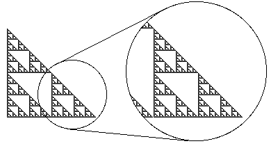

Among the geometric images known as fractals, the most familiar examples are self-similar. These are characterized by the property that
One of the most famous of these is the Sierpinski Gasket, shown below.
|  |
| The Sierpinski Gasket with one of the three large copies of itself magnified to show detail |
It is easy to see that this fractal is made up of copies of itself: it has three large copies, one of which is shown magnified.
These in turn contain copies of copies of copies, etc.
Note that in theory the complete gasket is the limit set of an infinite process, and as a result, any picture we can see is not the actual gasket but a stage in the process of generating the gasket. No one has ever physically seen a complete gasket, or any other self-similar fractal, except with our minds' imagery.